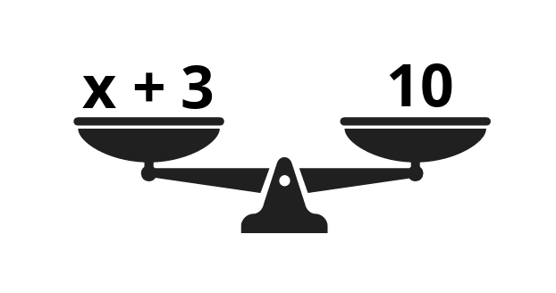
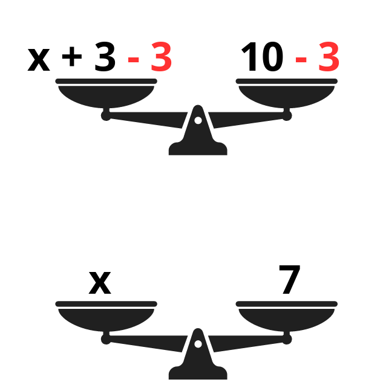

Imagina que estás resolviendo un misterio. Tienes una caja misteriosa (□) o una letra (como “x”) y tu tarea es descubrir qué número hay dentro. Eso es lo que hacemos con las expresiones algebraicas: usamos símbolos para representar un número que aún no conocemos.
A veces no sabemos un número exacto, pero sí sabemos cómo se relaciona con otros números. En lugar de escribir “un número que no sé”, usamos algo más corto, como un recuadro (□) una letra (como “x” o “n”). Veamos un ejemplo con un recuadro:
3 + □ = 7
Aquí estamos diciendo: “¿Qué número le debo sumar al 3 para llegar a 7?”. Sabemos que: 3 + 4 = 7, entonces □ = 4. Veamos otro ejemplo, esta vez con una "X".
x + 5 = 12
La letra “x” representa un número desconocido. Para encontrarlo, hacemos la operación contraria a sumar 5, o sea restar 5::
x + 5 (- 5) = 12 (- 5 ) → x = 7
Ya tenemos la respuesta. "X" equivale a 7
Las expresiones son como balanzas. Imagina que tienes dos lados y los dos deben pesar lo mismo.
Significa que el número misterioso más 3 tiene que dar 10. Para mantener el equilibrio, haces lo contrario de sumar 3: x +3 (-3) = 10 (- 3) → x = 7
Con este proceso, sabemos ahora que "x" equivale a 7
En los ejercicios con símbolos o letras, el número desconocido puede aparecer en diferentes operaciones. Aquí tienes algunos ejemplos:
1. El perímetro de una figura se obtiene:
2. ¿Qué unidad se usa para medir el área?
3. Si un cuadrilátero tiene lados de 10u, 10u, 10u y 10u, su perímetro es:
4. El área de un cuadrilátero se calcula:
5. El área de un triángulo con base 8u y altura 6u es:
6. El perímetro de un rectángulo de 12u de largo y 5u de ancho es:
7. Si un triángulo tiene base 10u y altura 5u, su área es:
8. ¿Cuál de las siguientes opciones describe mejor la diferencia entre perímetro y área?
9. Si un cuadrilátero tiene base 15u y altura 4u, su área es:
10. El área de un triángulo con base 12u y altura 10u es:
11. Si un jardín tiene forma de cuadrilátero con lados 20u, 20u, 15u y 15u, su perímetro es:
12. Imagina que quieres cercar y luego cubrir con pasto un terreno rectangular de 18u de base y 7u de altura. ¿Cuánto miden el perímetro y el área respectivamente?